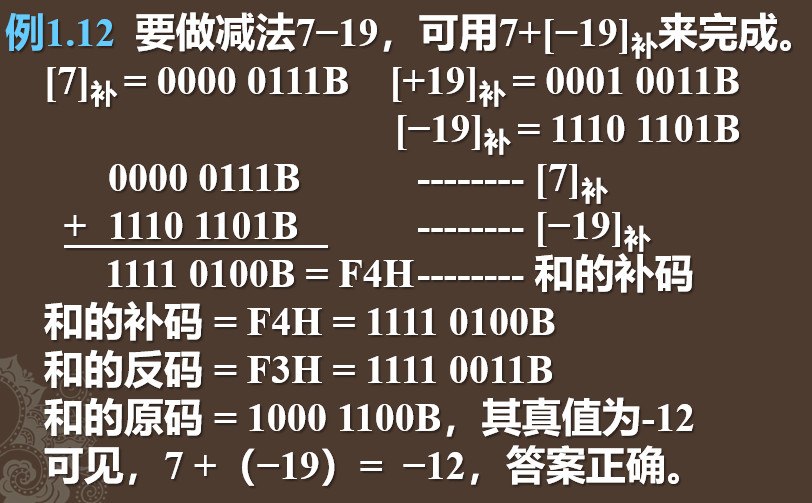
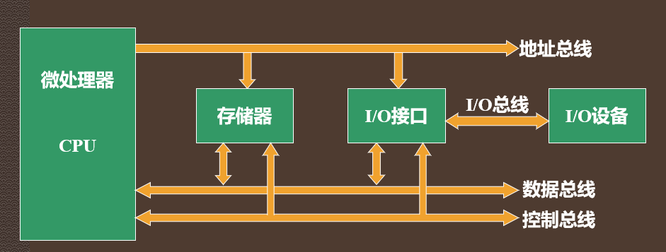
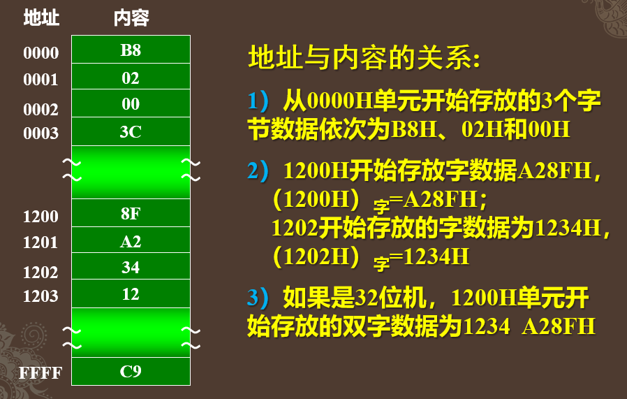

1. 计算机中数的表示方法
1.1 带符号数
最高位做符号位，1表示负数，0表示正数。0101 1101B = +931101 1101B = −93
1.2 原码，反码，补码
原码：正数的符号位用0表示，负数符号位用1表示，其余位为数值。X=+105，[X]原=0110 1001BX=−105，[X]原=1110 1001B
反码：正数的反码与原码相同，负数的反码是正数的按位取反。[+4]反=0000 0100B[+31]反=0001 1111B[+127]反=0111 1111B (最大值)[−4]反 = 1111 1011B[−31]反 = 1110 0000B[−127]反 = 1000 0000B (最小值)
8位二进制数的反码范围为−127～+127。
带符号数用反码表示时，最高位为符号位，当它为正数时，后7位为真正的值，它为负数时，后7位要取反后才能得到真正的值。[X]反=1001 0100B[X]真值=−[110 1011]= −107
补码：正数的补码与原码相同，负数的补码是反码加1。
[+4]原=0000 0100 = [+4]反 = [+4]补
[−4]原=1000 0100B
[−4]反=1111 1011B （正数按位取反）
[−4]补=1111 1100B （反码+1）
[+127]原=0111 1111B = [+127]反 = [+127]补
[−127]原=1111 1111B
[−127]反=1000 0000B
[−127]补=1000 0001B
[−128]补=1000 0000B8位二进制数能表示的补码范围为−128～+127；
16位二进制数能表示的补码范围为−32768～+32767；
带符号数用补码表示时，最高位是符号位；
当符号位=0，表示正数，后7位为其真正的数；
当符号位=1，表示负数，要将后7位的最低位减1，求得反码，再按位取反，才能得到真正的数（真数）。
若已知[X]补=1001 0100B，求X的反码和原码。
[X]反 = [X]补−1 = 1001 0100B − 1= 1001 0011B
[X]原 = 1110 1100B
因此, X = −110 1100B = − (64+32+8+4)10 = −108补码可看成“带符号位的数”, 符号位也参加运算。
要减去一个数，只要加上其补码。

2. 微型计算机基本结构

微型计算机与冯·诺依曼结构计算机无本质区别。
主要不同：CPU采用集成化的微处理器，各部件通过总线 相连，所有外设都应通过I/O接口电路才能连到CPU。
2.1 微处理器
微处理器是整个微型计算机的中央处理单元（CPU），内部一般包含算术逻辑单元（ALU），通用寄存器，时序和控制部件，以及内部总线。
微处理器主要完成的工作有：
- 控制微处理器与存储器或I/O设备之间交换数据
- 进行算术与逻辑运算等操作
- 判定和控制程序流向
2.2 存储器
存储器用来存放数据和指令，其内容以二进制表示。每个单元可存8位(1字节)二进制信息。
为了正确存取内存单元，需要为每个单元编1个存储器地址(Memory Address)。地址是不带符号整数，从0开始，顺序加1，到最大值后又回0。例如, CPU有16根地址线A15～A0，可表示的地址范围为216=65536个单元，地址编号为0～65535或0000～FFFFH。
1个存储单元中存放的信息称为该存储单元的内容。
16位机，数据以字(Word，W）为单位，用两个字节单元存放一个字，并规定：低字节在前，高字节在后。
极少数系统中，字数据也会按高字节在前、低字节在后的规则存放。
32位机中，32位数应以4字节或双字来表示。

2.3 输入输出设备和接口电路
I/O设备：
- 输入—将原始数据和程序传送到计算机。输入设备：键盘、鼠标、扫描仪、CD-ROM、数码相机。
- 输出—将计算机处理好的数据以各种形式（数字、字母、文字、图形、图像和声音等）送到外部。输出设备：激光打印机、显示终端、七段发光二极管显示器、液晶显示器、扬声器。
- 磁盘和磁带，既可看成存储设备，也可当成I/O设备。
接口电路： I/O设备种类繁多，其速度、信号电平与主机不一致，要通过接口电路连到计算机。
接口电路是主机和外设间的桥梁，提供数据缓冲驱动、信号电平转换、信息转换、地址译码、定时控制等各种功能。
2.4 总线
从CPU和各I/O接口芯片的内部各功能电路的连接，到计算机系统内部的各部件间的数据传送和通信，乃至计算机主板与适配器卡的连接，以及计算机与外部设备间的连接，都要通过总线（Bus）来实现。
总线标准，是设计计算机部件、I/O设备甚至计算机软件的依据。
按总线中传送的信息分为：地址总线，数据总线，控制总线，还有电源和地。
地址总线（Address Bus）
- 用于传送地址信息，是单向总线，总从CPU指向存储器或I/O。CPU通过地址总线对存储器或I/O端口寻址。
- 地址总线数目决定了CPU能直接寻址的范围。
8位CPU，如8080，有16根地址线A15～A0，可直接寻址的范围为216=65536字节单元，即64KB；
16位CPU如8086/8088，有20根地址线A19～A0，最大可寻址220=1048576字节单元，即1MB；
80286有24根地址线，可直接寻址224=16MB；
80386有32根地址线，可寻址232=4GB；
Pentium以上CPU有36根地址线，寻址范围高达236=64GB。数据总线（Data Bus）
- 用于传送数据信号的总线，是双向总线，CPU既可以通过它从存储单元或I/O端口读取数据，也可将数据传送到存储单元或I/O端口。
- 数据总线的多少决定了一台计算机的
字长。16位机一次可并行传送16位数据，32位机则可传送32位数据。 - 8086和8088都是16位CPU。但8088内部有16根数据线，外部只有8根，故称它为准16位CPU。
- 以80386、80486及Pentium等为CPU的微型计算机都是32位机。现在的主流微型机是64位机。
控制总线（Control Bus）
- 控制总线是CPU对存储器、外围芯片和I/O接口的控制以及它们对CPU的应答、请求等信号组成的总线。